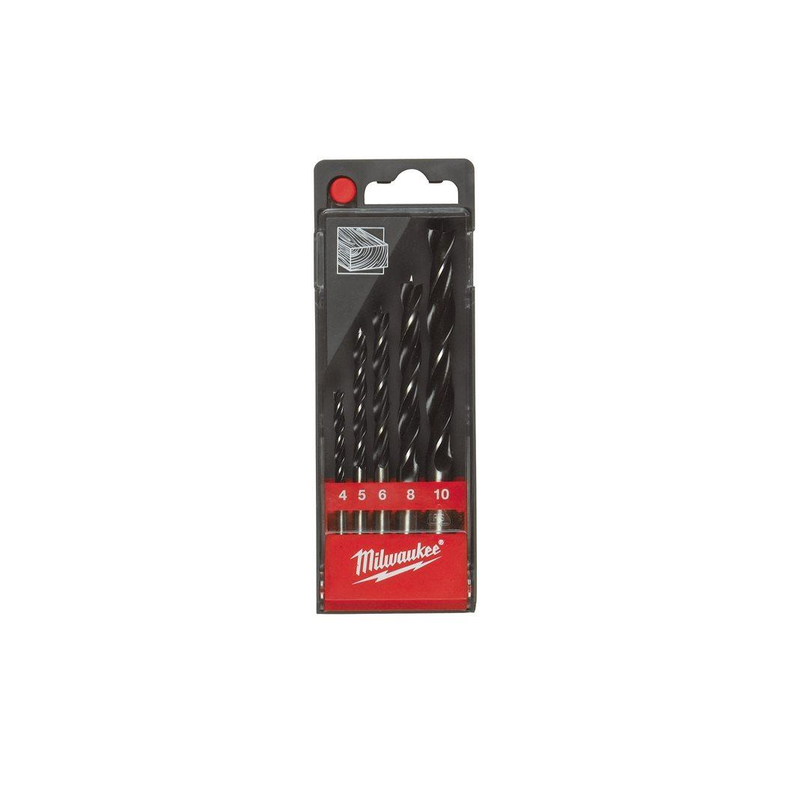

<div style="display:flex;flex-wrap:wrap;gap:8px"></div><h2>Features</h2><div><ul><li>Suitable for drilling hardboard, plywood, chipboard and all natural hard and soft wood.</li><li>Produced according to DIN 7487 E.</li></ul></div><div><div><h2>Information</h2><table><tr><td>Contents</td><td>⌀ 4 / 5 / 6 / 8 / 10  mm</td></tr><tr><td>Pack quantity</td><td>5</td></tr><tr><td>Supplied in</td><td>Plastic cassette</td></tr><tr><td>Article Number</td><td>4932352465</td></tr><tr><td>EAN</td><td>4002395371242</td></tr></table></div></div>